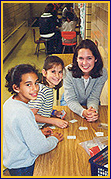
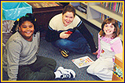

A mentoring and reading program, K-grams BookMARK
(Mentoring And Reading with Kids) gives college students the opportunity to visit elementary school classrooms
to work with K-5 students, helping them with reading, writing, and other special assignments. This program welcomes EVERYONE on campus to participate.
Organized into daily sessions, BookMARK takes place
everyday Monday through Friday. As determined by the BookMARK Coordinators and teachers, each session is set up slightly different. While many sessions involve volunteers working one-on-one with students, some sessions include
group activities, depending on the needs of the classroom.
To volunteer, simply click here for the
virtual sign-up sheet. In addition, all transportation is provided.
Just show up at The Cube (between the Union and the LSA Building)
at the time listed.
Teachers:
Teachers of the class tailor the
program to their individual classroom. After meeting
with a K-grams BookMARK Director and the BookMARK Coordinator for that session,
the teacher chooses what will happen during that session.
Volunteers:
To volunteer, just fill out the simple form and
sign up for the sessions that you can
attend. You can volunteer weekly, monthly, or whenever your schedule
allows. From there, volunteers can be involved as much as they like,
depending on their personal experiences and whether or not they
can resist those cute, little kids. Further involvement then happens
with teacher approval.
Maintenance:
The BookMARK Director and
Coordinators monitor the program throughout the year.
The Director will always keep the teachers informed and
assist with any problems or concerns. As the program
gets rolling, the Coordinators take on the
responsibility to make sure the minimum number of
volunteers go to the school each week and that they
have proper transportation.
If you are interested and would like to volunteer, please fill in
the online forms
If have any questions about BookMARK, please email
bookmark@umich.edu
|